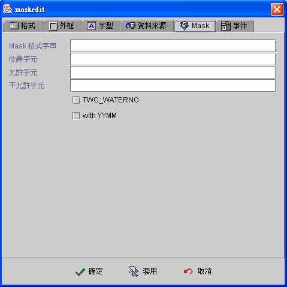
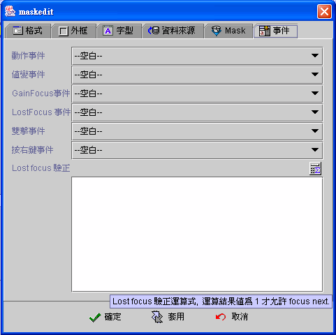

|

MaskEdit (MaskEdit component)
共同屬性 (common properties)
資料來源 (data source)
Mask屬性 (mask)
事件 (event)
運算式屬性存取
(formula get/set properties)
Maskedit 元件 (MaskEdit)，使用於連結資料來源
(data
Source) 資料欄位 (data field) 的顯示 (display)、輸入 (input)、修改
(update) 的基本元件，與編輯方塊元件不同的是，提供 Mask 格式字串，方便使用者讀取與輸入。NaskEdit 元件亦可不連結資料欄位 (binding)，而是使用運算式
(formula)
顯示運算後的結果，當視窗資料來源移動資料記錄、存檔、刪除或其他元件值內含值改變
(changed) 時，運算式 (formula) 將會自動重新計算即時同步更新。可串接事件以反應各種商業邏輯
(business logical) 的運作，例如：當元件內含值修改時、按下
Enter 鍵時、元件 Gain Focus 時、元件 Lost Focus 時、雙擊滑鼠的左鍵時、按下滑鼠右鍵時，
則會啟動指定的相關事件程序。
資料來源
(data source)
-
資料來源 (data source)：資料來源。
-
資料欄位 (data field)：資料來源內的資料欄位。
-
可編輯 (editable)：是否允許使用者編輯。
-
選擇全部 (select all)：Focus 移至元件時，編輯方塊元件內的值，標示
(mark) 為全選狀態 (select all)。
-
自動切換輸入法 (enable input method)：Focus
移至元件時，編輯方塊元件自動顯示切換為，使用者作業系統目前所使用的輸入法
(input method)。
-
Focus 加速器
(accelerator)：按下所要的快速鍵。應用程式執行時，使用者須按住
"ALT" 鍵+快速鍵，可以將
Focus 移至元件。
-
使用運算式 (use formula)：使用運算式
(formula) 顯示運算後的結果，當視窗資料來源 (data source)
移動資料記錄、存檔、刪除或其他元件值內含值改變 (changed) 時，或以 SetProp() 運算式執行屬性 "revalidate" 時，運算式
(formula) 將會自動重新計算即時同步更新。
-
只有在初始化時作用 (initial only)：運算式
(formula) 只在視窗開啟後，計算運算式並將結果顯示於編輯方塊元件中，之後即不再自動計算更新
(compute and refresh)，設計師必須透過【設定元件內含值】的事件
(set component data event)，或重新計算以 SetProp()
的運算公式更新。
-
對齊 (alignment)：水平靠左中右對齊。

▲Top
Mask (mask)
Mask (mask) 是設計師根據資料連結 (data binding) 的欄位型別 (field type) 或運算公式
(formula) 的結果值，設定樣版格式 (mask format pattern)，jLIVE™ 系統會根據樣版格式 (mask format pattern)
將資料格式化(formatted)，在 MaskEdit 元件讀取時，將資料值格式化的結果顯示於元件中；編輯
(edit)
狀態時，則除了將格式化的結果顯示外，會要求使用者輸入與樣版格式 (mask format pattern) 相符合的字元，否則無法輸入。
-
Mask
屬性：

-
Mask
格式字串 (mask format pattern)：輸入 Mask 格式化字串。Mask
格式化字串會規範每個輸入位置 (character position) ，使用者可以輸入的字元，輸入不正確或不允許的字元，系統不接受且發出
Beep 聲。
格式字元 (formatter character)
| 字元 |
描述 (description) |
| # |
數字字元。
Any valid number, uses Character.isDigit. |
| ' |
含於格式中的字串，不可編輯。
Escape character, used to escape any of the special formatting characters. |
| U |
轉為大寫字元。
Any character (Character.isLetter). All lowercase letters are
mapped to upper case. |
| L |
轉為小寫字元。
Any character (Character.isLetter). All upper case letters are
mapped to lower case. |
| A |
任意文數字。
Any character or number (Character.isLetter or
Character.isDigit) |
| ? |
任意文字。
Any character (Character.isLetter). |
| * |
所有字元。
Anything. |
| H |
十六進位字元。
Any hex character (0-9, a-f or A-F). |
範例：
輸入Mask 格式化字串為 (##)####-#### 。執行時
MaskEdit 顯示為 ( ) -
。若設定位置字元為 _ 則顯示為 (__)____-____。
使用者輸入123 顯示為 (12)3___-____。輸入不是數字時，系統不接受且發出
Beep 聲。
系統設值 (Set Value) 時，不須含Mask 格式化字元。
取值時 (Get Value)時：
使用者在MaskEdit 元件輸入(12)3___-____。以運算式取值
{元件名稱} 或 GetProp("元件名稱", "text")
元件傳回 123 不含Mask 格式化字元，以
GetProp("元件名稱", "masktext") 取值元件傳回
(12)3___-___ 。
使用者在MaskEdit 元件輸入(_2)3_4__-____。以運算式取值
{元件名稱} 或 GetProp("元件名稱", "text")
元件傳回 23 4 不含Mask 格式化字元
且未輸入字元會填入空白，但不含後空白，以
GetProp("元件名稱", "masktext") 取值元件傳回
(_2)3_4__-____。
-
位置字元 (place
holder)：標示使用者在MaskEdit 元件中可輸入字元的位置。未設定時預設為空白。
-
允許字元
(valid characters)：除了Mask 格式化字元
限制輸入外，進一步限制輸入字元。例如：Mask 格式化字串為
(##)####-#### ，允許輸入所有數字字元，若設定允許字元為12345，則不允許輸入 67890 數字。
-
不允許字元
(invalid characters)：除了Mask 格式化字元
限制輸入外，進一步限制輸入字元。例如：Mask 格式化字串為
(##)####-#### ，允許輸入所有數字字元，若設定不允許字元為09，則不允許輸入 09 數字。
-
Lost focus 驗正 (lost focus verify)：設計師控制使用者輸入
MaskEdit 後，能否離開 MaskEdit 元件，focus 移往下一元件。不需額外控制使用者輸入值時無須設定此運算式。Lost focus
驗正的原則是每次 MaskEdit Lost foucs 時系統會計算運算式結果值，結果值非 0 且非空字串為真(true) 否則為偽 (fales)。根據結果值的真偽，決定是否
MaskEidt 可以 Lost focus 並 Focus 下一元件。Lost focus 驗正運算式中不可含有使 MaskEdit Lost Focus
的函式 (例如：以 DoEvent 開啟訊息視窗；或 SetFocus 至其他元件)，否則系統會進入無窮迴路導致 Stack overflow 的系統錯誤。
範
例：格式化字串為
(##)####-#### ，Lost focus 驗正運算式：TrimAll({元件名稱})
= 0 OR TrimAll({元件名稱}) =10 ；會限制使用者進入 MaksEdit 編輯時須填滿十個數字或清空，否則無法離開
MaskEdit 元件。
▲Top
事件 (event)
-
動作事件 (action event)：使用者按下 Enter
鍵時，即引發事件 (fire event)。
-
值變事件 (changed event)：當每次輸入值改變時，即引發事件
(fire event)，每一個按鍵輸入包括刪除鍵 (delete)
但不包括方向鍵，都會引發值變事件。
-
Gain Focus 事件：當 Focus
移入 MaskEdit 時，即引發事件
。
-
Lost Focus 事件：當
Focus 移出 MaskEdit 時，即引發事件
。
-
雙擊事件 (double clicked event)：當雙擊滑鼠的左鍵時，即引發事件。
-
按右鍵事件 (right clicked event)：當按下滑鼠右鍵時，即引發事件。

▲Top
運算式屬性存取
(formula get/set properties)
SetProp("元件名稱",
"屬性", 值) ：屬性設定。
SetProp("元件名稱",
"屬性",
值1, 值2)：屬性設定。
GetProp("元件名稱",
"屬性")：屬性讀取。
| Set
Properties |
屬性
(Properties) |
值1
(Value 1) |
值2
(Value 2) |
說明
(Descriptions) |
| enabled |
1 致能，0 失效 |
|
致能與失效。 |
| setfocus |
1 設定 Focus |
|
設定 Focus。 |
| visible |
1 顯示，0 隱藏 |
|
顯示與隱藏。 |
| repaint |
1 重繪，2
立即重繪 |
|
重繪。 |
| revalidate |
1 運算式重新計算 |
|
運算式重新計算。 |
| editable |
1 可編輯，0 唯讀 |
|
可編輯與唯讀。 |
| text |
文字串 |
|
設定文字串為其內含值。 |
| select |
起始位置 |
終止位置 |
將起始至終止位置的文字標示為選取，位置由
1 起算。 |
| caretpos |
游標位置 |
|
設定游標位置，位置由 1
起算。 |
| bg |
RGB(red, green, blue) |
|
背景顏色。值1 必須以Formula 的 RGB() 運算式給值。
|
| fg |
RGB(red, green, blue) |
|
前景顏色。值1 必須以Formula 的 RGB() 運算式給值。
|
| x |
正整數值 |
|
左座標位置。 |
| y |
正整數值 |
|
上座標位置。 |
| w |
正整數值 |
|
元件寬度。 |
| h |
正整數值 |
|
元件高度。 |
| xy |
正整數值 |
正整數值 |
左(Value1) 上(Value2) 座標位置。 |
| wh |
正整數值 |
正整數值 |
元件寬(Value1) 高(value2)度。 |
| Get
Properties |
| 屬性
(Properties) |
傳回值
(Return value) |
說明 (Descriptions) |
| isenabled |
1 致能，0 失效 |
致能與失效。 |
| isvisible |
1 顯示，0 隱藏 |
顯示與隱藏。 |
| iseditable |
1 可編輯，0 唯讀 |
可編輯與唯讀。 |
| text |
文字串 |
MaskEdit 中內含值文字串。 |
| masktext |
文字串 |
MaskEdit 中加上格式樣式的內含值文字串。 |
| length |
整數值 |
內含文字串長度。 |
| x |
整數值 |
左座標位置。 |
| y |
整數值 |
上座標位置。 |
| w |
整數值 |
元件寬度。 |
| h |
整數值 |
元件高度。 |
▲Top
Copyright © 2001~
2004 Probe Technology . All Rights Reserved.
Questions, comments,
and suggestions to Service@probe.com.tw
|